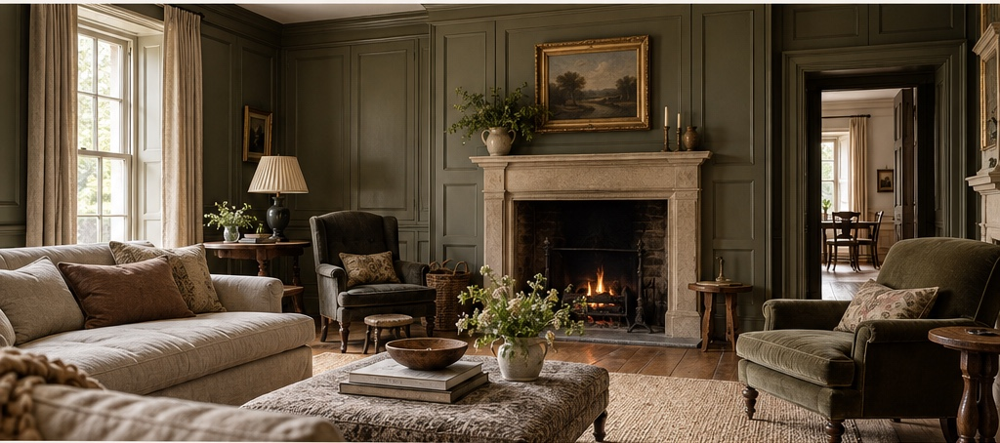
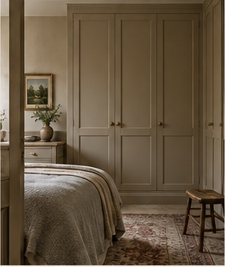
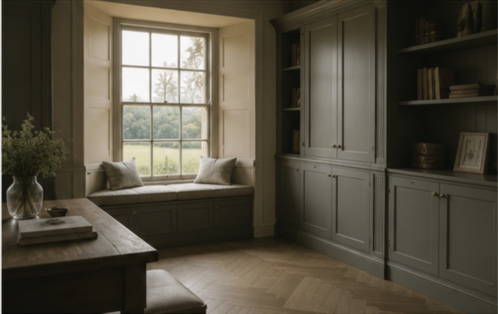
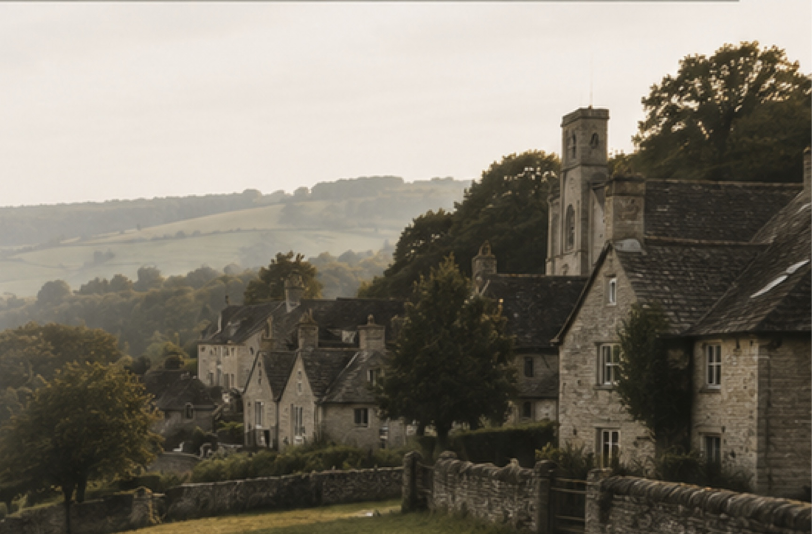
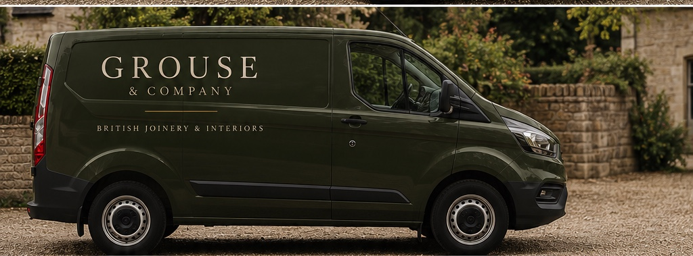

“For me, good joinery is not just about storage or finish. It is about how a room feels when you walk into it. The weight of a handle. The warmth of timber. The way a drawer opens.”
We work with homeowners, interior designers, architects and builders to create purposeful fitted cabinetry and carefully resolved interiors. Every decision serves the way you live while respecting the proportions, materials and character of the building.

Concept Reference · Grouse Standards PaletteAlongside kitchens, pantries, sculleries and home libraries, our work centres on five core joinery systems designed to bring calm utility to complicated period rooms.

Concept Reference · Grouse SystemConsidered storage and dressing spaces scribed cleanly into angled eaves, uneven chimney breasts and period cornice lines. Available with dovetailed solid oak internals, velvet-lined jewellery trays and soft motion-sensor lighting.
Preview the three sensory workshop motion loops designed for Grouse & Co—bringing the tactile warmth of oiled oak, laser-guided site precision, and freshly cut joinery into the browsing experience.
Instead of repeating words like “luxury” or “unrivalled”, we show how great joinery is actually achieved—combining our shared production resource at The Workshop with personal accountability from survey to aftercare.
Many clients find renovation overwhelming: too many materials, too many hardware options, and fragmented responsibility. We remove uncertainty early on.
A curated route using handpicked colours, seasoned timbers, mouldings, construction details and aged brass hardware (such as Armac Martin profiles) that we know belong together in a British country home.
For homeowners, architects and interior designers with a singular vision or complex architectural brief. We develop custom moulding knives, specialist veneers, stone integrations and one-off proportions.
Every commission follows our 6-stage sign-off sequence: 1. Agreement & Deposit (50%), 2. Technical Site Measure, 3. Specification Sign-Off, 4. CAD Production Pack, 5. Workshop QC (40%), and 6. Installation & Aftercare (10%).
How we read the setting, history and architectural fabric of a period Oxfordshire farmhouse before designing a single cupboard.

Proposal Visualisation · East Manor Farm (Ref 135)East Manor Farm carries the quiet character of a 17th-century Rotherfield Peppard farmhouse overlooking the common. The brief called for kitchen joinery, utility housekeeping cupboards and angled eaves wardrobes that feel calm, visually light and settled within the room—never bolted on.


I began my career in 2009 at Symm & Company, one of Oxford’s most respected heritage construction and joinery firms dating back to 1815. Over the years, working across remarkable period houses taught me what separates joinery that merely fills a gap from work that truly belongs to a building.
While living and working in a bespoke workshop in Canada for three years, I wrote the business plan for this company in my office illuminated by the ski-run lights of Grouse Mountain in Vancouver. Combined with the traditional British game bird that reflects our countryside home—and “& Company” as a nod to where my career began at Symm—Grouse & Company was born.
“After spending years working abroad, each time I returned home I had a deeper appreciation for English architecture, history and the homes tucked away in our villages and countryside. They deserve work that respects what is already there, while carefully bringing the home forward for modern life.”
Whether you are a homeowner planning a single room or a whole-house joinery package, or an architect, interior designer or builder seeking a dependable joinery partner, we would be pleased to hear from you.